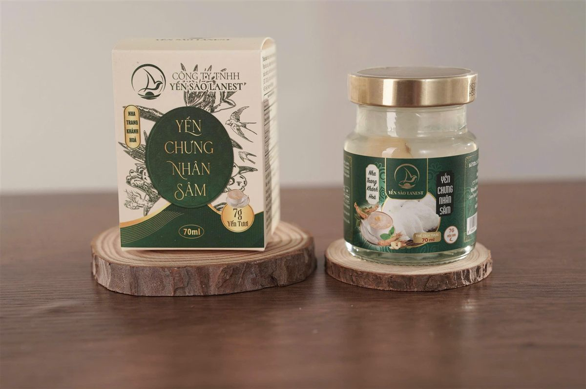

Yến thật hay yến pha, sạch hay đã qua tẩy, nhìn bằng mắt thường rất khó phân biệt. Vì vậy, khi chọn nơi mua, giấy tờ là thứ nói thay cho lời quảng cáo. Nhưng chứng nhận ISO yến sào chỉ có ý nghĩa khi anh chị biết đọc: chứng nhận đứng tên ai, cho việc gì, còn hiệu lực đến bao giờ. Bài này lấy chính giấy tờ của Yến Sào Lanest làm ví dụ.
Chứng nhận ISO 22000:2018 cấp cho Công ty TNHH Yến Sào Lanest, hiệu lực đến 23/09/2027
1. Vì sao người mua yến nên nhìn giấy tờ?
Ngành yến mấy năm nay thay đổi nhanh. Nói về chuyện nhiều nhãn yến từng có mặt trên thị trường rồi phải ngừng bán, chị Lê, người sáng lập Lanest, kể:
"hồi trước có rất nhiều nhãn hàng ở đây nhưng người ta làm sản phẩm yến cho không đạt nên người ta ngưng hoặc người ta không xuất hóa đơn đầy đủ, sợ kiểm tra ngược lại nên ngưng"
Sản phẩm không đạt thì không qua được kiểm tra, giấy tờ không đủ thì không dám để ai soi lại. Với người mua, đó cũng là cách lọc nhanh: nơi bán nào sẵn sàng đưa giấy tờ ra cho xem thì đáng để tin hơn nơi chỉ nói "hàng em chuẩn".
2. ISO 22000 là gì, nói cho dễ hiểu
Tờ chứng nhận ghi rõ: đây là chứng nhận hệ thống quản lý an toàn thực phẩm. Nghĩa là tổ chức chứng nhận đã đánh giá cách doanh nghiệp tổ chức công việc để giữ thực phẩm an toàn, và thấy phù hợp với tiêu chuẩn ISO 22000:2018.
Có hai điều nhiều người không để ý:
- ISO không phải phiếu kiểm nghiệm sản phẩm. Nó chứng nhận cách làm việc của một đơn vị, không đo đạm hay vi sinh trong một hộp yến cụ thể.
- ISO có thời hạn và bị giám sát. Quyết định chứng nhận của Lanest ghi đơn vị phải chịu đánh giá giám sát định kỳ, tối đa 12 tháng một lần; chính tờ chứng chỉ cũng ghi chứng chỉ có thể mất hiệu lực nếu không vượt qua các cuộc đánh giá giám sát này.
3. Đọc một tờ chứng nhận ISO: nhìn 5 dòng
Lấy chứng nhận của Lanest làm ví dụ, đây là những dòng anh chị nên đọc trên bất kỳ tờ chứng nhận nào:
| Đơn vị được chứng nhận | Công ty TNHH Yến Sào Lanest |
| Tiêu chuẩn | ISO 22000:2018 (hệ thống quản lý an toàn thực phẩm) |
| Phạm vi | Kinh doanh các sản phẩm từ yến sào |
| Tổ chức cấp, số chứng chỉ | Công ty Cổ phần Chứng nhận Quốc tế (ICB), số 240864.FMS.CN24 |
| Hiệu lực | Cấp 24/09/2024, hiệu lực đến 23/09/2027 |
Dòng phạm vi là dòng hay bị bỏ qua nhất. Chứng nhận của Lanest ghi phạm vi là "kinh doanh các sản phẩm từ yến sào", Lanest nói đúng như vậy, không nói rộng ra thành "mọi khâu sản xuất đều đạt ISO".
4. Chứng nhận đứng tên ai? Lanest và đơn vị gia công
Đây là chỗ Lanest muốn nói rõ để anh chị không bị nhầm, dù mua ở đâu. Một sản phẩm có thể do thương hiệu này bán nhưng được sản xuất, gia công tại một đơn vị khác, và mỗi đơn vị giữ chứng nhận riêng của mình.
Với Lanest: chứng nhận ISO 22000:2018 số 240864.FMS.CN24 ở mục 3 là của Công ty TNHH Yến Sào Lanest, phạm vi kinh doanh các sản phẩm từ yến sào. Đơn vị sản xuất của từng dòng sản phẩm được ghi trong hồ sơ tự công bố và trên nhãn; anh chị cần xem giấy tờ nào thì cứ hỏi, Lanest gửi đúng giấy tờ của đúng đơn vị, không gộp làm một.
Lời khuyên cho anh chị: khi ai đó đưa chứng nhận ra, hãy hỏi thêm một câu "chứng nhận này đứng tên công ty nào, phạm vi là gì". Nơi bán đàng hoàng sẽ trả lời được ngay.
5. Tự công bố sản phẩm và phiếu kiểm nghiệm: giấy tờ của từng sản phẩm
Nếu ISO nói về cách làm việc của đơn vị, thì hồ sơ tự công bố và phiếu kiểm nghiệm nói về từng sản phẩm. Lanest hiện có, ví dụ:
- Yến Sào Tinh Chế Lanest: đã tự công bố (Giấy tiếp nhận số 46/2024/TCB, ngày 05/02/2024). Mẫu kiểm nghiệm tại AVATEK cho kết quả đạm 62,7%; không phát hiện Salmonella, kim loại nặng, nitrit, SO2, hydro peroxit.
- Yến chưng đông trùng hạ thảo không đường và Yến vị dâu trẻ em: Giấy tiếp nhận số 333/2024/TCB ngày 16/12/2024, phiếu kiểm nghiệm đạt QCVN 6-2:2010/BYT.
Giấy tờ là một lần, còn việc kiểm tra phải đều. Chị Lê nói về lý do Lanest vẫn trụ được trong năm khó:
"Năm nay là năm khó khăn, thanh lọc rất nhiều. (...) Nhiều bên đóng cửa nhưng bên chị vẫn duy trì được vì hàng tháng đều tự gửi mẫu đi kiểm nghiệm thật."
Phần kiểm soát trong xưởng (đội thợ riêng, 4 chốt kiểm, cam kết 3 không) Lanest đã kể chi tiết trong bài Bên trong xưởng yến Lanest: 4 chốt kiểm và cam kết 3 không.
6. Tem, mã vạch, mã truy xuất: thứ anh chị tự kiểm được tại nhà
Giấy chứng nhận nằm ở văn phòng, còn tem và nhãn thì nằm ngay trên tay anh chị. Các mã GTIN (mã vạch sản phẩm) của Lanest được đăng ký với GS1 Việt Nam, xác thực đến 31/12/2027. Sản phẩm Lanest có tem chống hàng giả, dòng yến tinh chế và yến thô có mã truy xuất nguồn gốc.

Tên đơn vị chịu trách nhiệm in ngay trên hộp: Công ty TNHH Yến Sào Lanest
Khi cầm hộp yến, anh chị kiểm tra nhanh:
- Tem niêm phong, tem chống hàng giả còn nguyên, không bị bóc dán lại.
- Nhãn ghi rõ tên công ty, địa chỉ, số tự công bố (số TCB), ngày sản xuất và hạn sử dụng.
- Có mã vạch, mã truy xuất trên bao bì.
- Thấy dấu hiệu lạ ở sản phẩm thì không dùng, như cảnh báo in trên nhãn, và liên hệ nơi bán.
Muốn biết thêm cách nhận biết bằng mắt, mùi và khi chưng, anh chị xem bài cách phân biệt yến sào thật giả.
Câu hỏi thường gặp
Có chứng nhận ISO 22000 là yến chắc chắn đạt chất lượng?
ISO chứng nhận hệ thống quản lý an toàn thực phẩm của một đơn vị, không thay cho phiếu kiểm nghiệm từng sản phẩm. Nên xem cả hai: chứng nhận của đơn vị và kết quả kiểm nghiệm của sản phẩm mình mua.
Làm sao biết chứng nhận ISO còn hiệu lực?
Xem dòng "ngày cấp" và "hiệu lực đến" trên chứng chỉ. Chứng nhận ISO 22000:2018 của Lanest cấp ngày 24/09/2024, hiệu lực đến 23/09/2027, và phải qua đánh giá giám sát định kỳ.
Tôi có thể xem giấy tờ của Lanest không?
Được. Anh chị gọi 0258 6278 627 hoặc nhắn fanpage Yến Sào Lanest để được gửi chứng nhận và kết quả kiểm nghiệm của sản phẩm mình quan tâm.